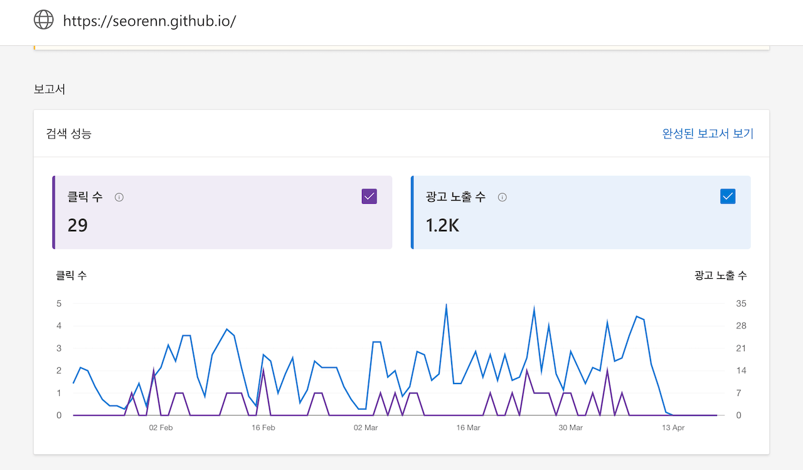

설마 빙(Bing)이 내 사이트를 차단시킨 것일까?
구글에 비해서 점유율도 낮고 그래서 인지도도 낮지만 그래도 존재감이 없지는 않은 검색엔진이 하나 있다. 바로 빙(Bing)이다. 무려 마이크로소프트라는 거대 기업의 검색엔진이다. 당연하게도 무시할 수는 없는 그런 검색엔진이다. 그리고 이 사이트 역시 빙 웹마스터 도구를 이용해 콘텐츠 검색 인덱싱을 관리하고 있었다.
그런데 문제는 최근 들어 빙이 페이지 인덱싱을 거부하는 경우가 많이 보인다는 점이다. 이 경우 페이지 URL을 검사해 보면 '차단됨'이라고 표시되며 빙 측이 인덱싱을 거부함을 알 수 있다. 다만 문제는 왜 차단되었는지에 대한 설명이 전혀 없다는 점이다. 알려주는 지침서에는 해당되는 내용이 없고 말이다.
참고로 사이트 검사를 해보면 빙이 사이트 페이지를 읽어들이는 데는 특별한 문제가 없었다는 것만 알 수 있었다. 봇 차단이나 서비스 거절 등의 사유는 아니라는 말이다.
가장 기분 나쁜 점은 빙 측에서 문제가 있는 것처럼 알려주는 게 전혀 없다는 점이다. 마치 아무 문제가 없다는 듯이 말이다. 그래서 오히려 더 기분이 나빴을 정도다.
그런데 최근 들어 더 큰 문제가 생겼다. 아래 스크린샷 처럼 최근 수 일간 페이지 클릭은 커녕 노출 조차 전혀 안 되고 있는 상황을 발견했기 때문이다.
 이 사이트의 Bing 보고서
클릭 수가 적은 것은 애초에 빙 사용자가 적으니 어쩔 수 없다고 본다. 그런데 노출 수가 어느 날을 기점으로 아예 0이 되어버렸다. 어떻게 갑자기 이렇게 될 수가 있을까?
이유는 모르겠지만 빙 측에서 이 사이트를 통채로 차단시킨 것으로 밖에 볼 수가 없다.
물론 위의 페이지 차단 문제와 동일하게 빙에서는 여전히 이 사이트에 어떤 문제가 있다고는 전혀 알려주고 있지 않다. 역시나 아무 문제가 없다는 듯이 말이다. 또 너무 열 받는다.
어떻게 하면 좋을까. 애초에 인바운드 트래픽도 적어서 딱히 차단되어도 문제는 없지만 찝찝하다는 것은 극복하기 어려운 일이다. 그리고 만약 구글이 심각한 규제를 처맞게 된다면 빙으로 수혜가 일부 몰릴 가능성도 없지는 않아서 어떻게든 놓고 싶지는 않기도 하고 말이다.
빙 웹마스터 도구에서 뭔가 지원을 받을 수 있을까 싶어 뒤져보다가 AI 챗봇인 Copilot이 보이길래 그냥 질문을 던져봤다. '내 사이트가 인덱싱이 안 되고 차단된 것처럼 보이는데 도대체 무슨 일이냐?' 이런 식으로 말이다. 그런데 Copilot에서 질문에 대답을 하지 않고 갑자기 자동으로 '지원이 요청되었으니 이메일 기다려라' 이런 메시지가 떴다. 이건 도대체 뭘까? 마이크로소프트가 하는 일은 왜 항상 이 모양이냐 하는 생각만 들었지만, 그래도 본의 아니게 지원 요청이 들어갔으니 지켜보기로 했다.
부디 좋은 결과가 나왔으면 좋겠다.